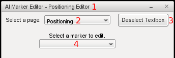

Table of Contents:
UAISK Overview
Games by Genre
Features List
Creating New Markers
Description of Variables
Marker and AIPlayer Datablock Descriptions Table
Weapon Datablock Descriptions Table
Setting Variable Values
General Rules
Marker and AIPlayer Datablock Values Table
Weapon Datablock Values Table
Traits
Behaviors
Aggressive Bots
Non-Aggressive Bots
Creating and Modifying Behaviors
Application Programming Interface (API)
Spawning and Killing Bots
Spawning at Objects
Spawning at a Position
Triggers and Items
Changing Teams and Spawn Groups
Special Moves
Explicit Movement
Start on Path
Path Alteration Scripting
Characters
Adding New Characters
Character Animations
Weapons
Using Multiple Weapons
Adding New Weapons
Assisting
Paths
AI Marker Editor
AIME Overview
AIME Object Creation
Path Management
AIME Pages
AIME Bottom Buttons
Other Variables
FAQs
UAISK Overview:
Although I've attempted to make this kit as complete and easy to use as possible, you have to remember that this is still "The Universal AI Starter Kit"
not "The Completely Finished AI That Will Be Perfect For Your Game No Matter How The Game's Designed... Kit". You will have to make some scripting
changes. You may just need a few tweaks (changing some of the variable values around and adding datablocks), or you may need
to rewrite significant portions of the code; depending on your game's needs. Remember, the more original you want your gameplay
to be, the more your script will probably have to be customized.
Games by Genre:
In general, The Universal AI Starter Kit would work well in: action/adventure games, non-turn based RPGs, platformers, and fast paced shooters
But likely wouldn't be as good in: tactical or stealth based shooters, turn based RPGs, fighting games, sports games (including
racing), strategy games (RTS or turn based), or games that don't use combat AI (puzzle games, rhythm games, and simulations)
Note: If you added in a cover system, this AI would work fairly well in a tactical shooter. If you made a few adjustments to
enemy detection, this would work well in a stealth shooter.
Features List:
- Eleven stock behavior modes, including both aggressive and non-aggressive.
- A team system. Have as many teams and bots as you want.
- Bots can automatically change weapons based on your specific settings.
- Easy installation, heavily commented and well documented code.
- Bots can be set to assist each other and the player.
- The foundations of a dialogue system.
- An advanced spawning system. Spawn or kill as many, or as few, bots as you wish to at any time.
- Advanced movement and navigation that requires no nodes or mesh.
- Performance optimized enemy targeting.
- A GUI based spawn marker editor, great for non-programmers.
- Allows you to create scripted events.
- Numerous distance, weapon and other variables that can each be set per datablock and/or individual bot.
- A flexible and modular design lets you add in your own customizations.
Creating New Markers:
An AIPlayerMarker (referred to simply as a "marker" for most of this document) can be made in two different ways, by using
the AI Marker Editor or manually.
The recommended way is to use the AI Marker Editor. Press "Alt A" to open the AI Marker Editor. Read the tooltips and
other editor text for help, it should be relatively intuitive; but if you require farther assistance, see the instructions below.
Manually placing a marker is done in much the same way as placing any other shape. The exact method differs slightly from engine
to engine. Check your version of Torque's documentation for further details.
Markers can also be placed within T3D prefabs if you desire.
Description of Variables:
Marker and AIPlayer Datablock Descriptions Table:
Here's a description of each of the AI specific variables that can be set for individual markers and/or player datablocks. Check
here for the values each variable can be.
|
Variable Name
|
Name In Editor
|
Description of what it does
|
|
fov
|
FOV
|
Aggressive bot's normal field of vision.
|
|
distDetect
|
Detect
|
The range at which a bot will start reacting to a target. This can greatly affect performance.
|
|
maxRange
|
Max Range
|
The maximum distance that the bot wants to get from the player.
|
|
sidestepDist
|
Sidestep
|
This value determines how far a bot sidesteps when it is stuck or dodging.
|
|
paceDist
|
Pace
|
The maximum range the bots pace away from their guard point.
|
|
Weapon
|
Current Weapons
|
Which weapon(s) you want the bot to use. Check here
for more details.
|
|
respawn
|
Respawn
|
Controls whether bots respawn automatically or not.
|
|
behavior
|
Behavior
|
Sets how the bot should act. Check here for more details.
|
|
minRange
|
Min Range
|
The minimum distance that the bot wants to get from the player.
|
|
npcAction
|
NPC Action
|
Sets the action that a non-aggressive bot should do.
Check here for more details.
|
|
Variable Name
|
Name In Editor
|
Description of what it does
|
|
spawnGroup
|
Spawn Group
|
This is used for spawning and killing specified bots.
Check here for more details.
|
|
cycleCounter
|
Cycle Counter
|
Sets how often the bot should try to switch to a different weapon. Check here for more details.
|
|
weaponMode
|
Weapon Mode
|
Sets how the next weapon is to be selected. Check
here for more details.
|
|
activeDodge
|
Active Dodge
|
The bot will dodge once in this many think cycles while in combat.
|
|
team
|
Team
|
This is used for selecting a target, and can also be used for spawning and killing bots. Check here for more details.
|
|
block
|
Character Type
|
This is the datablock that the bot is spawned as.
Check here for more details.
|
|
pathname
|
Path
|
The name of the path that the bot should follow. Check
here for more details.
|
|
leash
|
Leash
|
The maximum distance that a bot with the "isLeashed" trait can be away from its leash point.
|
|
realName
|
Bot Name
|
The name that is displayed above the bot's head when names are set to be shown.
|
|
countRespawn
|
Respawn Count
|
The maximum number of times that a bot can respawn.
|
|
Variable Name
|
Name In Editor
|
Description of what it does
|
|
advancedDodge
|
Advanced Dodge
|
Sets the pattern of dodging the bot will use while it is in combat.
|
Weapon Datablock Descriptions Table:
Here's a description of each of the AI specific variables that can be set for weapon datablocks. These variables can only be
set within a weapon's datablock or as an overall default, and are not changeable from within the AI Marker Editor. Check here for the values
each variable can be.
|
Variable Name
|
Description of what it does
|
|
ignoreDistance
|
The maximum range at which a bot will fire at a target with a given weapon.
|
|
usesAmmo
|
Sets whether or not a weapon uses ammo.
|
|
fireDelay
|
How long the bot waits after firing a burst from the weapon, before it can fire another burst.
|
|
triggerDown
|
How long the bot holds down the trigger when firing a burst.
|
|
minIgnoreDistance
|
The minimum range at which a bot will fire at a target with a given weapon. Useful for explosive weapons.
|
|
weapRating
|
Used to determine which weapon is the best. A higher value means the weapon is better.
|
|
weapStartAmmo
|
The amount of ammo that bots using this weapon should start with.
|
|
notAim
|
Can set enemies to be unable to adjust their aim or move while firing a weapon; but can still move/aim in between firing bursts.
|
Setting Variable Values:
General Rules:
The value placed on a marker overrides both the datablock's value and the overall default. The datablock's value overrides the
overall default. The overall default is only used when no other value is given. Which makes the order: Marker's Value > Datablock
Value > Overall Default
No numbers can be negative or zero unless otherwise noted. Be careful when using values of 1 or less. Distances can use decimal
point values (floats), but all other values should use whole integers only (ints). Don't stray too far from the default values;
for example- if the default is 6, you probably shouldn't change it to 9006. Capitalization and the order you put the variables
in shouldn't matter.
When setting values on a marker, it's best to use the AI Marker Editor.
To set values in a datablock or manually set an AIPlayerMarker's value, use: name = value;
Marker and AIPlayer Datablock Values Table:
These values are set per marker and/or player datablock. Words in parenthesis such as (numbers), are the type of data that can
be used as a value; words in quotes are the exact words that can be used. Check here for a description of each variable.
|
Variable Name
|
Accepted Values
|
Default Value
|
Notes on Values
|
|
fov
|
(numbers)
|
200
|
In degrees, so between 1 and 360.
|
|
distDetect
|
(numbers)
|
50
|
In general, this should be the largest of the distances.
|
|
maxRange
|
(numbers)
|
25
|
In general, this should be less than distDetect.
|
|
sidestepDist
|
(numbers)
|
10
|
In general, this should be less than distDetect.
|
|
paceDist
|
(numbers)
|
6
|
Can be set to zero.
|
|
Weapon
|
(weapon datablock names), "-noweapon", "-random"
|
"Ryder"
|
Multiple weapons can be separated by spaces.
|
|
respawn
|
"true", "false"
|
"true"
|
This is a bool value.
|
|
behavior
|
(behavior object names)
|
"ChaseBehavior"
|
Can only be properly setup behaviors.
|
|
minRange
|
(numbers)
|
0
|
Can be set to zero. Must be less than sidestep and maxRange.
|
|
npcAction
|
(numbers)
|
(none)
|
Has no overall default. Can be set to zero.
|
|
Variable Name
|
Accepted Values
|
Default Value
|
Notes on Values
|
|
spawnGroup
|
(numbers)
|
1
|
Can be set to zero.
|
|
cycleCounter
|
(numbers), "X"
|
5
|
Multiple values can be separated by spaces. "X" will get a random value when used.
|
|
weaponMode
|
"Pattern", "Random", "Range", "Best"
|
"Pattern"
|
Can only be the words listed.
|
|
activeDodge
|
(numbers), "X"
|
1
|
Set to zero to disable. "X" will get a random value when used.
|
|
team
|
(numbers)
|
2
|
By default, all players are put on team 1 and all bots are on team 2. You should not skip any numbers.
|
|
block
|
(player datablocks), "-random"
|
"DefaultPlayer"
|
Cannot be set per datablock. When using "-random" a spawnGroup must be on the marker.
|
|
pathname
|
(path names)
|
(none)
|
Cannot be set per datablock. Has no overall default.
|
|
leash
|
(numbers)
|
35
|
In general, this should be about the same as distDetect.
|
|
realName
|
(text string)
|
"Bot"
|
Can be multiple words. It can also be set as just a space, which can be useful in T3D to show the bot's health without a name.
|
|
countRespawn
|
(numbers), "X"
|
0
|
Use 0 for infinite respawning. Use "X" for a random number of respawns.
|
|
Variable Name
|
Accepted Values
|
Default Value
|
Notes on Values
|
|
advancedDodge
|
"Random", "Side", "Back", "Serpentine"
|
"Random"
|
Can only be the words listed.
|
Weapon Datablock Values Table:
These values are set per weapon datablock. Words in parenthesis such as (numbers), are the type of data that can be used as a
value; words in quotes are the exact words that can be used. All variables have an overall default. Check here for a description of each variable.
|
Variable Name
|
Accepted Values
|
Default Value
|
Notes on Values
|
|
ignoreDistance
|
(numbers)
|
50
|
This should be the same as or more than maxRange.
|
|
usesAmmo
|
"true", "false"
|
"true"
|
This is a bool value.
|
|
fireDelay
|
(numbers)
|
1000
|
In milliseconds. 1000 is 1 second.
|
|
triggerDown
|
(numbers)
|
50
|
In milliseconds. 1000 is 1 second.
|
|
minIgnoreDistance
|
(numbers)
|
0
|
Can be set to zero. Must be less than ignoreDistance and maxRange.
|
|
weapRating
|
(numbers)
|
5
|
If two or more weapons have to same quality rating, this can lead to minor errors for bots that are in "Best" mode.
|
|
weapStartAmmo
|
(numbers)
|
10
|
The weapon has to be set to use ammo.
|
|
notAim
|
"true", "false"
|
"false"
|
This is a bool value.
|
Traits:
If you plan on just using a stock version of The UAISK, then the traits system isn't very noteworthy. However if you intend to
make extensive modifications to the AI or add in new behaviors, then the trait system can give you a lot more flexibility and
freedom then you would have otherwise, as well as simplifying the code change you need to make.
Traits are values given to a behavior that represent the properties of that behavior. Most of the stock traits are bool (true/false)
values. The value of any of a behavior's traits can be changed dynamically and it will instantly change for all bots using that
behavior.
The following is a list of each stock trait with a description of what that trait does.
|
Name
|
Description of what it does
|
|
isAggressive
|
Sets if the bot attacks or not. If the bot is not set to attack, it will have access to the NPC Actions system. Check here for more details.
|
|
canMove
|
Sets if the bot is able to move at all.
|
|
returnToMarker
|
Sets if the bot should return to its marker or path after killing or losing track of its target.
|
|
isKillable
|
Sets both if the bot can be killed and if other bots can target it.
|
|
isFollowPlayer
|
Puts the bot on the player's team and has it follow the player.
|
|
isLeashed
|
Sets if the bot can move away from a certain object. The object is set by the leashedTo trait.
|
|
leashedTo
|
This trait is only used if the behavior is leashed. This trait is not a bool value.
|
|
isSkittish
|
Sets the bot to run away when touched and is able to move farther from its spawn marker while pacing.
|
|
doesAssist
|
Sets whether or not the bot should come to the aid of nearby team member when that team member gets hurt. Check here for more details.
|
Behaviors:
Here is a list of the stock behaviors that come with The UAISK, as well as a brief description of how each one differs in the
way it acts.
Aggressive Bots:
All aggressive bot behaviors target, attack, and move in the same way. Here I'm only noting the major differences between them.
"ChaseBehavior": After the bot has lost sight of or killed its target, the bot will stay around the area where it last
saw its target alive. This is the default behavior.
"GuardBehavior": After the bot has lost sight of or killed its target, the bot will attempt to go back to its spawn marker
or path.
"TurretBehavior": This is for stationary attackers. The bot will not move from its original spawn location, but will turn
around on that spot.
"LeashedBehavior": The bot can't move farther than a certain amount from its spawn marker. The bot always returns to its
spawn point like in "guard" behavior.
"TeammateBehavior": When not in combat, the bot will try to go back to a player on its team. If there are no players on
the bot's current team, the bot will switch teams. Bots do not need to use the "teammate" behavior to be on the same team as
players and other bots.
"PetBehavior": This behavior acts in much the same way as the "teammate" behavior. The difference is that instead of just
following the player around, the bot is actually leashed to the player; meaning that it can never be more than a certain distance
away from the player.
Non-Aggressive Bots:
These are non-aggressive bot behaviors which can have scripted actions (such as dialogue and changing which behavior they're
using). While in these behaviors, bots will not attack anything at all.
"NPCBehavior": The bot cannot be killed.
"KillableNPCBehavior": The bot can be killed.
"EscortBehavior": The bot can be killed and will follow the player around.
"CritterBehavior": The bot can be killed and runs from the player when touched. It can also pace far away from its marker.
"MedicBehavior": The bot can be killed and will assist the player. It will then return back to its marker after it is
done with its scripted action.
When the player is within the bot's detect range, an event can happen (such as text popping up). Going outside of the bots detect
range will make the pop-up close. The stock capabilities of this conversation system are fairly limited because this kit's focus
is AI, not dialogue. All editing and additions are done through script. Please review the comments in aiNPC.cs
to see how this system works. Note: This system was made for a game with only around a dozen lines of dialog. If you're making
a RPG with significant amounts of dialog; this system may need to be changed. More than one non-aggressive bot in an area can
cause text issues.
To change what action a non-aggressive bot does when a player gets within its range, change the bot's npcAction setting
to a different number. Listed below are the three default examples that come with The UAISK. As-is, they don't do much, but they
should provide enough of an example to allow you to script what you would actually like to do.
- npcAction = 1; When in range, you will get a dialogue box asking if you wish to fight or not. If so, the bot will switch
from a non-aggressive behavior to the "Chase" behavior and will begin attacking you.
- npcAction = 2; A dialogue box pop up and three rounds of ammo will be added to the player's inventory.
- npcAction = 3; This shows a simple cycle of text with yes/no options.
- npcAction = 4; Displays a textbox and then heals the player back to full health. Only displays once you're in range of
their weapon and if you have taken damage already.
Creating and Modifying Behaviors:
There are a variety of reasons why you may want to create new behaviors or modify existing ones. You may want different bots
to have slightly different trait combinations than the stock version, you might want to have a few special bots that change their
traits during the course of your game, or you may want to make a completely new, custom trait and use that trait in different
combinations. But whatever your reasons might be, here's how you do it.
To change what traits a behavior has, simply change the value of that trait within the correct behavior in the file aiBehaviors.cs.
Of course that will change the way in which every bot that's using that behavior reacts. If you only want certain bots to react
differently, you'll need to create a new behavior and set those bots to use the new behavior. To create a new behavior, simply
copy and paste a behavior which you would like to use as a base, then change the new behavior's name and set the values you would
like it to have for each trait.
To learn about behavioral traits, check here.
Application Programming Interface (API):
This section contains script commands that may be used by you (the developer) to perform a wide variety of different actions.
These commands are for use in conjunction with your own custom code, so some experience with TorqueScript may be necessary to
perform certain tasks with these commands.
Spawning and Killing Bots:
Spawning and killing is done by either the bot's spawn group or team number.
AIPlayer::actionByGroup(%spawnGroup, %action);
AIPlayer::actionByTeam(%team, %action);
If the group or team is set to "all" then everything will spawn.
//Spawn all groups
AIPlayer::actionByGroup("all", "spawn");
//Spawn all teams
AIPlayer::actionByTeam("all", "spawn");
The "spawn" action always forces a new bot to spawn from each marker in the selected group, team or "all". This includes markers
that already have bots associated with them. However, spawning two or more bots from the same marker can cause minor issues;
such as causing some of the other actions to not work properly. Because of this, it is recommended that you use the action "unspawned"
instead whenever possible, unless you specifically want more than one bot to spawn from the same marker for a particular purpose.
You can also "delete" bots by group, team or "all". "Delete" both deletes the bot and stops it from respawning again.
//Delete group 1
AIPlayer::actionByGroup(1, "delete");
//Delete team 2
AIPlayer::actionByTeam(2, "delete");
You can "kill" bots by group, team or "all". "Kill" will cause the bot to die, playing a death animation, but it is able to respawn
because of this.
//Kill group 1
AIPlayer::actionByGroup(1, "kill");
//Kill team 2
AIPlayer::actionByTeam(2, "kill");
"Stop" will stop all selected bots from respawning but will not immediately kill them; they must die naturally.
//Stop all groups
AIPlayer::actionByGroup("all", "stop");
//Stop team 3
AIPlayer::actionByTeam(3, "stop");
The action "unspawned" will spawn bots at all markers from that team/group that don't currently have a bot spawned from them.
This includes bots that were killed using the "kill" action.
//Spawn all bots
AIPlayer::actionByGroup("all", "unspawned");
//Spawn all bots in team 1
AIPlayer::actionByTeam(1, "unspawned");
You can use the "inactive" get rid of all bots not currently engaged in combat. All idle bots in that group or team will be deleted
and have their respawning stopped. However, bots that are actively engaged in combat will remain unaffected.
//Delete group 1
AIPlayer::actionByGroup(1, "inactive");
//Delete all inactive bots
AIPlayer::actionByTeam("all", "inactive");
The stock version of the kit's installation includes a "spawn all by group" action on mission load. This action can be commented
out or deleted if you do not want that to occur.
The actions are: "spawn", "delete", "kill", "stop", "unspawned", "inactive"
And they can each be done by group, team, or "all".
Spawning at Objects:
To spawn a bot using the same position and rotation as another object, instead of just using premade spawn markers, use the follow:
AIPlayer::spawnAtObject(%obj, %block, %delete, %path);
Where %obj is the ID number or name of the object you'd like the bot to spawn at, %block is the datablock you would
like the new bot to use, %delete is a bool (true/false) value that represents whether or not you would like to delete
the spawn marker after the bot has been spawned, and %path is the name of a path you would like the newly spawned bot
to follow, if any. Other than the %obj value, all other values are optional. The object that you use will be deleted to
make sure that the new bot does not occupy the same space as that object.
The %delete value is useful if you don't want the newly made marker/bot to be saved. However, the marker will not be deleted
if the bot that it spawns is set to use a feature which requires a marker, even if you request for the marker to be deleted.
Note that if the marker is deleted, any spawning and killing actions
you attempt to use on the bot will not work properly, and some NPC
actions may not reset.
The main purpose for this is to be able to replace one bot with another, because another bot can be used as the spawn object,
but it can be used with any other object as well.
Markers made this way that are not set to %delete will be saved when the mission is saved. Because you cannot add per
marker variables to bots spawned this way, other than the %path value, make sure the datablock and/or default variables
are set to the way you want the bot to behave.
Spawning at a Position:
Much like spawning at an object, to spawn a bot at a specific position, use the follow:
AIPlayer::spawnAtPosition(%pos, %block, %delete, %path);
Where %pos is the position in world space you'd like the bot to spawn at, and %block, %delete, and %path
work in the same way as they do for the spawnAtObject command.
Other than the %pos value, all other values are optional. The value for %pos can be either a position or a transform,
if you would like to set the bot's starting rotation as well. The %delete value has the same limitations as when using
the spawnAtObject command.
A few examples of what this can be used for include spawning a bot near the player (see the Pet Tutorial
for an example) or spawning a bot at a random location. The spawnAtPosition command has the same limitations in regards
to saving and pre-marker variables as the spawnAtObject command
does.
Triggers and Items:
The spawning and killing system allows for quite a bit of variation. Three of the many possible ways of using it are to have
bots spawn on mission load (which is part of the default installation), have bots spawn using a trigger, and to have bots spawn
using an item.
A bit of setup is needed to spawn by a trigger (but the coding is already done for you). First, you have to place a triggerObject
down. You can name it whatever you want, but you have to specify two variables:
dataBlock = "guardTrigger";
spawnGroup = (number);
The trigger's datablock can be selected as you make the trigger from within the world editor. You should specify a spawnGroup
for each trigger, and then add a matching spawnGroup parameter on each marker or datablock that you want to spawn from that trigger.
Once that's done, comment out or change the group in the line of script: AIPlayer::actionByGroup("all", "spawn"); in the
function startGame() in the file gameCore.cs.
By default The Universal AI Starter Kit does not allow you to spawn from an item. But here's an example of an item that will
spawn group 1 when picked up; this is made for T3D 1.2.0:
datablock StaticShapeData(AITriggerItem1)
{
category = "AITriggers";
//Change what shape is used
shapeFile = "art/shapes/items/patch/healthpatch.dts";
};
function AITriggerItem1::onCollision(%this, %obj, %col)
{
//Make sure a player picked up the item
if (%col.getClassName() $= "Player" && %col.getState() !$= "Dead")
{
//Delete the item
%obj.delete();
//You can change the group number or what action occurs in the next line
AIPlayer::actionByGroup(1, "unspawned");
}
}
Changing Teams and Spawn Groups:
There can be an almost limitless number of total spawn groups, teams and members of each team and group. The team system also
allows players and bots to be in any combination on any team. Team members can switch teams at any point in time without reloading
or respawning. To change a bot or player's team after they have been spawned, use:
changeTeams(%obj, %team);
Where %obj is the bot or player whose team you'd like to change, and %team is the number of the team you'd like
them to join. This can be used to join an existing team, or start a new team. For bots, this will both change the team of both
the bot and its marker's team at the same time, to allow you to do an actionByTeam based on the bot's new team number.
To switch a marker's spawn group, use the function:
changeSpawnGroups(%obj, %spawnGroup);
In changeSpawnGroups() the %obj variable is the marker and not the bot like it is with changeTeams(), and
%spawnGroup is the number of the group you would like the marker to be apart of.
Neither of these functions permanently change the marker's group or team. If you save and reload your mission after using these
functions, the markers will still be apart of their original team or group. These functions are for a temporary change within
a single mission.
Special Moves:
AIPlayer::doSpecialMove(%obj, %time);
The above function is used if you want the bot to stop all normal, automated tasks and just do one specific task that you tell
it to do. The %obj variable is the bot that you'd like to effect, and the %time variable is the duration the special
move will last, given in milliseconds. The function can also be called using:
%obj.doSpecialMove(%time);
An example of when this might be useful is if a bot was pushed or fell down somehow. You probably wouldn't want that bot to continue
moving and firing their weapon as they're trying to get back up. So you would use this special move function during the duration
that their "getting up" animation is playing to get them to stop those other tasks. Then after the given time has pasted, the
bot will begin acting normally again.
When a new special move is set, it will override the time on the previous special move. This can be used to have the bot start
thinking sooner, or to keep it inert for a longer period of time.
One thing to note is that you have to actually script the rest of the special move yourself. This is an advanced feature that
is mainly for use by knowledgeable scripters and coders. For more about character animation scripting, check here.
Explicit Movement:
The explicit movement feature allows you to tell a specific bot to move to a specific location. However, this script feature
will not work correctly under all circumstances because The UAISK's navigation system was not specifically designed for movement
destinations to be set manually by players or developers.
While the bots should have little trouble getting around one obstacle, if there are two or more obstacles between them and their
destination; they might have a harder time. A harder time could mean getting completely lost, or just moving in a very long,
suboptimal manner. Also the farther the distance, the less optimal their path will likely be; but in some cases, farther distances
can help the bot to navigate around large or multiple obstacles.
It is recommended that you use this type of explicit movement as little as possible in your game, and if at all possible, use
waypoint based paths instead. Explicit movement should only be used for movement that is highly dynamic (such as being randomized)
or highly dependant on the player's input (such as controlling the AI via mouse input). For movement to predetermined points
and times (such as a scripted event), a waypoint based path should be used. And of course, normal movement for average situations
should be controlled by the kit's premade automated systems, rather than set manually.
The syntax for explicit movement is as follows:
%obj.explicitAIMovement(%position);
Where %obj is the name or ID of a bot and %position is the world coordinates for the location you would like that
bot to move to. If the bot in question has a valid target, that bot will continue to go after that target rather than start moving
to the specified position. Here is an example of this script's usage:
allBotsGroup.getObject(0).explicitAIMovement(LocalClientConnection.player.getPosition());
In the script above, allBotsGroup.getObject(0) is the first or only active bot that has been spawned, and LocalClientConnection.player.getPosition()
is the player's position, assuming this game is hosted locally.
Start on Path:
This command will force a bot to begin moving along a path.
%obj.startOnPath(%path);
Where %obj is the name or ID of a bot and %path is the name or ID of a path. If the bot in question has a valid
target, that bot will continue to go after that target rather than to start moving along the specified path. If the bot is already
moving along a path, this command can be used to make the bot begin to move along a different path. One possible use for this
command is to make bots that enter a certain trigger start moving along a specific path, or even different or randomized paths.
Path Alteration Scripting:
For any number of reasons, there may come a time when you'd like to change a path in your game while the game is running. Here
are a few functions that can be called from any custom script you create to help you do that.
If you would like to reverse the direction which bots travel along a path, you can do so using the following command.
reversePathOrder(%path);
Where %path is the ID number or name of the path whose direction you would like to invert.
However, reversing the path's direction while a bot is using the path can sometimes cause the bot to skip nodes; depending on
where the bot is along the path when the reverse happens. But at other times, the direction inversion will occur without issue.
If you would like to move the whole path at once by a certain amount, you can do so using the following command.
moveWholePath(%path, %offset);
Where %offset is the amount you would like each axis of the path's position to change by. And of course if you'd like
to change the position of just one node, you can use the stock Torque command:
%node.setPosition(%pos);
Where %node is the ID number or name of the node whose position you would like to change, and %pos is the new position
you would like it to be located at.
If you would like to change the scale of a path, you can do so using the following command.
rescalePath(%path, %scale);
Where %scale is the percentage you would like each axis to be rescaled by.
For more information about these features, check the Path Management
section below.
Characters:
Adding New Characters:
To be able to use different player datablocks or characters, a few things need to be setup properly. First, the model has to
exist with all the necessary .dts and .dsq files. Second the new character needs to have a definition script; e.g.
player.cs or adam.cs. Next that definition file must be called in onServerCreated() in
datablockExec.cs. The example character that comes with the kit, and the recommend way to
setup your character, is to use the player as a base. If you do this, a definition file doesn't need to be created because player.cs
already exists. See the FAQs section if you need further help
with basic character setup.
Open aiDatablocks.cs and copy and paste all of the follow so that you have two of each of them (of course copy/paste the
whole datablock and not just the name):
datablock PlayerData(DefaultPlayer : AIPlayerDataHolder)
In the datablock name above you'll see that it has "DefaultPlayer" somewhere in the name. Change the word "DefaultPlayer" to
another name that represents the new bot that you want to make. The name doesn't really matter as long as it doesn't have any
spaces or weird punctuation marks.
In the new version of "datablock PlayerData()" that you just made, change the shapeFile to point to the dts file you'd
like to use. You can also change the value of any other per datablock
variables as needed; but none are required. Now simply set your datablock's name as the value of the block variable
on your AIPlayerMarker and spawn the bot.
In your new datablock you may notice that it uses a pattern like datablock PlayerData(UniqueName : AIPlayerDataHolder). The
AIPlayerDataHolder is a parent datablock that the new AI datablock inherits some of its settings from. By default the kit uses the
player's datablock as the parent, but it could use another datablock or none at all if you give the AI datablock all of the needed
settings; although changing the parent datablock is not recommended.
Character Animations:
The Universal AI Starter Kit isn't directly involved with character animations, and in fact it is even abstracted from Torque's
animation system. While keeping that in mind, at some point you will likely want one of your characters to perform a non-stock
animation. If said character is AI controlled, you may have to add a bit of custom, animation related code to The UAISK. Because
animations involve stock Torque features, custom coding, and a moderate amount of programming knowledge, but have little to do
with The UAISK directly; these instructions will not go into the full details.
However here are a few key, animation related script commands that are present in the stock version of Torque; just to help you
get started.
%obj.playThread(%threadNum, %sequenceName);
%obj.stopThread(%threadNum);
%obj.pauseThread(%threadNum);
%obj.setThreadDir(%threadNum, %direction);
%obj.setActionThread(%sequenceName, %hold, %fps);
An animation thread defines what animation is playing at any given time based on the animation's priority and what type of animation
it is. Animation threads can have a thread number of between 0 and 3, with 0 being the highest priority. Types of animations
can include full body, lower body only, and blend animations. The sequence name is the name of the animation. Some stock Torque
sequence names include "root", "run", "death1", and "jump".
If you are interesting in adding non-stock animations to your AI characters, you should also check out the Special Moves section.
For more information about these and other stock Torque features, consult
the official documentation for the version of Torque you are using, or try searching for those terms within the GarageGames site.
Weapons:
Using Multiple Weapons:
When allowing a bot to use multiple weapons, the first thing you have to do is set which weapons can be used. You can do this
by using the AI Marker Editor or by manually setting the Weapon
variable. When setting the variable Weapon manually, separate each weapon's name with a space:
Weapon = "weapon1 weapon2 -noweapon -random";
The values "-noweapon" and "-random" can be used in addition to weapons' names. The value "-noweapon" will
set the bot to not use a weapon, and "-random" will select a random weapon from any valid weapon datablock that is in
your game. The same weapon can be added to the Weapon variable multiple times. The AI system does not have a limit for
the total number of weapons a bot can use.
The variable cycleCounter determines how often the bot changes, or tries to change, weapons; it can also have multiple
values separated by spaces. If a value is set to "X", it will be replaced with a random number each time that value needs
to be used.
cycleCounter = "2 1 X";
The variable cycleCounter can hold an almost unlimited amount of different numbers in any mode. But, in general, "Pattern"
mode is the only weaponMode that should need more than one number.
Before equipping any new weapons, the bot always checks if its target is within the weapon's range (both min and max), and if
it has ammo for that weapon; no matter what weaponMode the bot is set to. Currently there is no way for a bot to purposefully
pick up new weapons and ammo. Because of this, it's recommended that you leave $AISK_ENDLESS_AMMO set to true, which will
bypass checking the bot's inventory for the weapon's ammo. However if the bot happens to accidently collect a new weapon, the
new weapon will be added to the end of the bot's weapon variable. If the bot has more than one weapon and its target is out of
range of its current weapon, it will try to switch to a different weapon.
The different weaponMode values are as follows:
"Pattern": Goes in the order the weapons are in, starting over once the last weapon is used, or was attempted to be used.
The cycleCounter goes in order, but starts over once the bot uses the last cycle or when the weapons are started over.
If a weapon is skipped, then its corresponding cycleCounter value is also skipped (so that the pattern is always the same).
"Best": The bot always tries to use the weapon that has the highest weapRating of the weapons on its list. The
weapons are sorted by the function sortBestWeapons(%shape) whenever a new weapon is acquired. In sortBestWeapons(%shape),
%shape should be the bot. The cycleCounter always goes in order, only starting over once the last cycle is used.
"Range": The bot always uses the weapon with the lowest range that is still within range of its target (both min and max
ranges). If more than one weapon has the exact same range, it will use the latter one in its Weapon variable. The cycleCounter
always goes in order, only starting over once the last cycle is used.
"Random": The bot uses a random weapon from its Weapon variable. The cycleCounter always goes in order,
only starting over once the last cycle is used.
Adding New Weapons:
To be able to use new weapons, first your weapon needs to be setup properly:
- The model has to exist.
- Script has to be made to handle the weapon; e.g. crossbow.cs, SwarmGun.cs, or rocketLauncher.cs.
- And that script must be called in onServerCreated() in datablockExec.cs.
See the FAQs section if you need further help with basic weapons
setup. Once you have your weapon working in general (test it using the normal, default player if needed), you need to make it
work with The Universal AI Starter Kit. Set any AI specific per weapon
datablock variables that you wish to set; but none are required. Then simply set your weapon's name as the value of the
Weapon variable on your marker or datablock and spawn the bot.
Assisting:
When a player or bot takes damage or dies, nearby team member bots can react if their behavior is set to assist. They will move
to the injured's location and look around quickly. Bots will come to assist only if they are within the correct distance and
can get to the location of their injured team member. You need to have both the behavior trait and the global variable set to
the appropriate value, depending on how you would like each bot to react; as well as having the bot on the correct team of course.
To increase the performance of your game, it is recommended that you have the minimum number of bots possible use this feature.
The global variable $AISK_CAN_ASSIST is located in the file aiGlobals.cs and can be set to the following values:
1 = Bots can only assist players or bots following the player that get injured.
2 = Bots can only assist other bots that are injured.
3 = Bots can assist all players and bots that get injured. This is the default value.
All other values, such as 0, will completely disable assisting.
Paths:
If you wish to have a bot follow a path, first you have to place a path with nodes in your mission and give the path a name.
Set the value of the bot's pathname parameter to correspond to the name of that path that you want the bot to move along.
If you wish for the bot to be unpathed, don't add any value to pathname variable and the bot will default to being unpathed.
A new path can either be created manually or by using the AI Marker
Editor. To create a path manually (which is not the recommended way), consult the instruction manual for the version
of Torque that you are using.
If a path is not set to loop, then the bot will stop at the final node on that path. This feature, when used with trigger or
item based spawning, can allow you to create scripted events (of course, you'll have to script said events yourself). If a path
is set to loop, the bot will keep circling it until another action comes up (such as spotting a target). Make sure your paths
have the isLoop variable set to what you want.
The "Pause Time" field in the AI Marker Editor's Path Editor sets how long the bot will pause at that node. The value should
be given in milliseconds. If you're not using the AIME path editor, the variable that sets the minimum time will be called msToNext.
If you do not want the bot to stop when moving along its path, set the value of this to 0.
For behaviors with the "returnToMarker" trait, the bot will attempt to return to its path after it has lost sight of or killed
its target. For behaviors without the "returnToMarker" trait, the bot will stay in the area where it last saw its target. Non-moving
or player following behaviors (such as turret, pet, teammate and escort) cannot be pathed at all.
For more about paths, check the API section.
AI Marker Editor:
AIME Overview:
All AI bots are spawned based on an AIPlayerMarker (which is usually just called a marker). The marker is an object that
is used as a placeholder for all of the bot's settings. These settings are applied to the bot when it is spawned. To help aid
you when creating and adjusting these markers, The UAISK includes an editor called the AI Marker Editor (AIME).
Press "Alt A" to open the editor. You can also add the AI Marker Editor to the "Edit" drop down menu in the world editor
by doing the "Optional Custom Install Instructions" for the version of Torque you are using. For a video tutorial about using
the AI Marker Editor, click here (Note: This video tutorial is now partially
out of date). Also be sure to read the text and tooltips that are in the editor itself.
The default AI Marker Editor should look similar to the following image.

- Title: At the top of the editor you'll see that it says "AI Marker Editor - " then the name of the page you are currently on.
- Page Selector: From the page selector you can set what information you would like the editor to display. Detailed descriptions
of each page are below.
- Deselect Textbox: If you have selected a textbox to type in a value, you will be unable to move using the keyboard and will type
instead. You can unselect the textbox using this button. After it is no longer selected, you are free to move your character
or camera around again using the keyboard.
- Marker Selector: From here you can select which marker you would like to edit from a list of all previously created makers in
the mission. When you select a marker with the AIME, it will also show up selected in the world editor if the world editor is
open. When you select a marker, you'll see all of its values in the editor until you apply, or select a different marker. If
the marker doesn't have a value on it, the editor will show the datablock's value; if the datablock also doesn't have a value,
the editor will show the overall default value (which is exactly how values are determined when a bot is spawned).
Number 4 is only shown on the four marker editing pages; which are Positioning, General, Distances, and Weapons. However, the
Path Management and Path Editing pages have a similar GUI element for selecting paths.
AIME Object Creation:
Marker, path and node creation and deletion can only be done from the "Creation" page. All other pages are only used for editing
these existing objects or for supplemental tasks.
"New - From Selected": When pressed, a brand new marker will be created. The new marker will be a clone of the currently
selected marker, but it will be given a different name and placed using your current position and rotation. The existing marker
that you wish to use as a base can be selected from the dropdown menu to the right of this button.
"New - Use Defaults": When pressed, a brand new marker will be created. The new marker will be placed using your current
position and rotation. The settings that are first used on this new marker will be from the selected datablock's values or the
global default values, depending on which you have set. The datablock whose defaults you would like to use can be selected from
the dropdown menu to the right of this button.
"Delete Selected Marker": When pressed, the currently selected marker will be permanently deleted.
"New Path": When pressed, will create a new path. A path can be selected from the dropdown menu to the right of this button.
"New Node": When pressed, will create a new node on the currently selected path. This node will be placed at your current
position. A node can be selected from the dropdown menu to the right of this button.
"Delete Selected Path": When pressed, the currently selected path will be permanently deleted.
"Delete Selected Node": When pressed, the currently selected node will be permanently deleted.
To prevent accidents, the "delete" buttons can be disabled from a global
variable at the top of AIMarkerEditor.cs.
Path Management:
The tools on the "Path Management" page of the editor allow you to manage a path as just one object instead of having to make
separate changes to each individual node that makes up that path. Changing individual node and path properties can be done from
the "Path Editing" page.
The "Clone Path" button will copy the path and apply the given offset to the new copy. Cloning makes a new copy of the path with
copies of each node and uses the same properties for the nodes and path, plus an optional offset to each node's position. "Move
Path" applies a given offset to each node on the selected path without making a new copy.
The "Scale Path" feature allows all 3 axes to be scaled independently. Values are given as a percentage. The values can be positive
to make the path larger, or negative to make it smaller. Zero can also be used to not have an axis scale. Values of less than
-100 will flip the path inside out; because it's making the path more than 100% smaller; and -100 exactly will make the path
into a dot.
Scale can be given as just 1 value to have the path scale evenly in all directions. Given as 2 values, the path will scale on
the X and Y axes only; or given as all 3 values for separate X, Y, and Z scaling.
You can use the "Flip Path" button to turn over a path along its X, Y, Z or All axes.
The "Merge Paths" button will take all the nodes from the selected path and add them to the end of a second selected path; and
will then delete the first path which is now node-less. The second path is the one that is selected from the dropdown menu to
the left of this button. Warning: Using the "Merge Paths" feature while the mission editor is open
can cause your game to crash.
The "Split Path" button will take all nodes after the given amount and move them from the original path onto a newly created
path.
The "Reverse Path" button inverts the order the nodes are in along the path. This will cause any bots to move in the opposite
direction when traveling along the path.
When open, the mission editor does not update the nodes' visual positions properly when using these commands. You may need to
close and reopen the mission editor to see the nodes' correctly updated positions.
AIME Pages:
The AI Marker Editor has 10 pages. They are: Creation, Positioning, General, Distances, Weapons, Path Management, Path Editing,
Actions, Globals, and Search
If you don't see the setting you're looking for on one page, try another. Check the editor's text and tooltips for help with
any specific variables, or you can check here.
• Creation
Create and delete markers, paths and nodes. Further details can be found in the AIME Object Creation section above.
• Positioning
When editing or creating markers; try to place them exactly on the ground/floor or as close to the ground/floor as possible without
going under it. This can be done using the "Get Position" button in the editor. When the "Get Position" button is pressed it
will change the marker's position to the current position of the player or camera; depending on which one you are using at the
time. When you push the "Get Rotation" button, it will do the same as the "Get Position" button, only with rotation instead of
position. The "Get Both" button will get both the player's/camera's rotation and position and set it to the marker once the changes
are applied. Changing the scale of the marker will change the scale of the bot that is spawned from it. When making new markers
on the "Creation" page, a "Get Both" is done automatically before the marker is made.
• General
On this page you can find a wide variety of non-distance related variables and settings. The text towards the bottom of the page
displays the ID number of the bot that is associated with the currently selected marker.
• Distances
On this page you can change the various distance settings that the bot will use to navigate and attack when in your game. The
distances are generally in order from longest to shortest.
• Weapons
This page allows you to change the weapons that the bot will use and the way in which it will use them. If you select a weapon
from the "Available Weapons" list, it will be added to the "Current Weapons" list. The "Current Weapons" list is what gets placed
on the marker when you apply. You can click a weapon on the "Current Weapons" list to delete that weapon from that list. For
more about weapons, check here.
• Path Management
From this page you can change the attributes of each node on an entire path at one time. Attributes that can be changed include
scale, position, and direction. Further details can be found in the
Path Management section above.
• Path Editing
On this page you can edit the properties of paths and nodes that have already been created. The top portion of the paths page
is for paths, the bottom section is for nodes on the selected path. When the "Get Position" button is pressed it will change
the nodes position to the current position of the player or camera; depending on which one you are using at the time. Use the
appropriate apply button for the object you are trying to edit. For more about paths, check here.
• Actions
On this page you can perform a variety of actions that will help you as a developer.
It is important to give markers a unique name when creating new ones. Unnamed markers will automatically be named "MarkerXX",
with XX being their number based on order of creation. However, if for some reason the markers' order gets mixed up, you can
use the "Rename Markers" button to reorder them again. Giving each marker a unique name both avoids some minor issues and helps
you when editing. Likewise the "Rename Paths" button will automatically name all of your paths as "PathXX" and the waypoint nodes
on your paths as "NodeXX", with "XX" being there number in order.
The "Hide Markers" selector will allow you to hide or show all markers as needed while editing. The "Display Name As" dropdown
allows you to select if or how you would like the bot's name to be shown.
Check here for instructions on using the other actions that are on the bottom section of this page.
Note: For some of the "Display Name As" options to work, you must have a GuiShapeNameHud enabled in your playGui.
By default, GuiShapeNameHud is enabled.
• Globals
On this page you can temporarily change the value of the global AI variables. No changes you make to the value of the global
variables will be saved; this feature is only to help you when testing different settings. To permanently save a value you like,
you must change the value of that variable in the file aiGlobals.cs.
Check here or aiGlobals.cs for more information about different global variables.
• Search
Search for markers that contain certain values for certain variables. This can be helpful for levels with large amounts of markers
with diverse settings. Global/overall values do not count in the results, however datablock based values do. The search is not
case sensitive and will not get partial matches.
You can select the variable you would like to be search through, the operation that should be used to search, and the key word
or number that should be looked for. After the search button is pressed, it will tell you the number of results and list all
markers that match your search. You can then select a marker from that list to have it selected throughout the rest of the AIME.
The search results will still be displayed even if the editor is closed and reopened.
AIME Bottom Buttons:
After you have made all changes you wish to make to a single marker, use the "Apply Edits" button to apply the changes. You can
switch pages (but not markers) before you apply and any values that you have changed will be correctly saved when you apply.
You need to apply changes once per marker. When applying, the editor adds as little information as possible to the marker itself.
If you are setting a marker to have the same value for a variable as the datablock's or default's value, the marker's value will
be set to blank. This allows you to change the datablock's value or the default value without having to edit all of your markers
to see the result.
The "Apply + Respawn" button will apply your changes to that marker; and then it will delete and respawn the entire spawn group
of the marker you were editing. This allows you to see the changes you've made without having to reload the mission.
"Apply Edits" and "Apply + Respawn" are only shown on the four marker editing pages; which are Positioning, General, Distances,
and Weapons.
The "Save Mission" button will save the mission whether or not anything has been changed; and it does not have a "save as" option,
it will only do a normal save. Note: Because the AIME's "Save Mission" button helps to preserve your
AI settings, it is recommended that you always use it whenever any bots have been spawned in your mission; even if you have only
made non-AI related changes to your mission elements since the last time you saved.
The "Spawn" button only appears at the bottom of the "Creation" page. When pressed, all unspawned bots will spawn.
Other Variables:
Here's a brief description of some of the variables that can only be set globally; from the file aiGlobals.cs or
from any script which you might make. This isn't every global variable, just the most interesting ones. Check aiGlobals.cs
for more variables. For the values of these variables, follow the general
rules.
|
Name
|
Description of what it does
|
|
$AISK_MARKER_HIDE
|
Turns marker hiding on or off, useful when editing missions.
|
|
$AISK_ENHANCED_FOV_CHANCE
|
There is a 1 in (this variable's value) chance that the bot will gain 360 degree vision to prevent it from being snuck up on.
Can be set to 0 to disable.
|
|
$AISK_ENHANCED_FOV_TIME
|
How long the bots field of vision is enhanced to 360 for.
|
|
$AISK_ENHANCED_DEFENDING_TIME
|
How long the bot gets a 360 FOV and a longer detect distance for after being sniped.
|
|
$AISK_ENHANCED_DEFENDING_DISTANCE
|
Detect distance is multiplied by this number after a bot has been sniped.
|
|
$AISK_ATTENTION_RANGE
|
The detect distance is multiplied by this number to get the distance from the player at which the bot will start to pay less
attention. This can greatly affect performance.
|
|
$AISK_HEALTH_IGNORE
|
Bots go for the target with the least health, unless two or more targets have health within this amount of one another, then
they go for the closest target. If you set this number really high, bots will always just go for the closest target; if set very
low (including 0), bots will always go for the target with the lowest health.
|
|
$AISK_FREE_FOR_ALL
|
If set to true, every bot will try to attack every other bot, regardless of their team.
|
|
$AISK_RAND_CYCLE_MAX
|
If the bot's weapon cycle counter is set to "x" it will get a random number between 1 and this value each time it is needed.
Check here for more details.
|
|
$AISK_RESPAWN_DELAY
|
Determines how long a bot waits in between dying and respawning again.
|
|
Name
|
Description of what it does
|
|
$AISK_FRIENDLY_FIRE
|
Sets if team members can hurt each other, this only includes the bots taking damage, including from hitting themselves.
|
|
$AISK_SHOW_NAME
|
Sets what a bot's real name should be displayed as. This can be set to "Show", "DontShow" or "Debug". When set to "Debug", warnings
are sent to the console when certain potential errors occur.
|
|
$AISK_ASSIST_DISTANCE
|
This variable's value times a bot's detect distance is how far away a bot can assist from.
|
|
$AISK_CAN_ASSIST
|
Sets which bots, if any, can assist bots and players on their team. Check here for more details.
|
|
$AISK_PATH_SPEED
|
The speed of the bot while on a path.
|
|
$AISK_PACE_SPEED
|
The speed of the bot while pacing.
|
|
$AISK_MIN_PACE
|
The minimum amount bots will pace away from their guard point.
|
|
$AISK_PACE_TIME
|
How often the bots will move to a new pacing location. Randomized between 1 and this value each time.
|
|
$AISK_CREATION_DELAY
|
How long the bots wait after spawning before they begin to think.
|
|
$AISK_ENDLESS_AMMO
|
Gives the bots an unlimited supply of ammunition for their weapons.
|
|
Name
|
Description of what it does
|
|
$AISK_RAND_DODGE_MAX
|
If active dodge is set to "x" it will get a random number between 1 and this value each time it is needed.
|
|
$AISK_RESPAWN_RANDOM
|
If the respawn count is set to "x" it will get a random number between 1 and this value on spawning the first time.
|
These are at the top of AIMarkerEditor.cs. These variables only change the way the AI Marker Editor (AIME) behaves during
the development of your game.
|
Name
|
Description of what it does
|
|
$AIME_DisableDeleteMode
|
Gets rid of the "delete" buttons in the editor to prevent accidents.
|
|
$AIME_SelectNextMarker
|
Changes how the next marker is selected while editing a preexisting marker in the AIME.
|
|
$AIME_SpawnAfterSave
|
Sets whether or not to spawn all the bots after saving in the editor.
|
|
$AIME_ResetOnCharacterChange
|
Resets (or not) a marker's values when the datablock it's using is changed.
|
FAQs:
Q: Something isn't working right, what should I do?
A: First make sure all files are executing and/or compiling properly. Then check the console log for errors. Then try
reinstalling the kit again from scratch. I and many other people have successfully installed and used this kit based on my instructions.
So your problem is likely caused by one of two things- you're trying to do a custom, non-default install; or you didn't follow
the instructions properly. If you're not doing a custom install, please try carefully redoing all of the instructions multiple
times before asking for help. The solution to your problem is most likely in the instructions and it's probably faster and easier
for you to do so than to wait for a reply in the forum for help.
If you still can't get something to work, be sure to be as detailed and clear as possible while asking for help (especially if
you're doing a non-default install). Your post should include:
- The version of Torque you're using.
- The version of The Universal AI Starter Kit you're using.
- What other kits, add-ons, customizations or modifications your test environment has. This means literally any changes at all;
including free resources, kits you have purchased and custom coding that you have done yourself. This information is especially
important because most problems are caused by code changes that have been made to Torque or the kit itself. If you haven't changed
anything at all and are having installation problems, please use the quick install files that come with the kit.
- As detailed of a description of the problem as possible. Post any console errors you're getting and give steps to reproduce the
issue if needed.
Please read and follow the above when posting for help in the forum. If you don't give all of the information that's needed, people won't be able to help you.
Q: Why isn't my custom character model, animation or weapon working?
A: Try using it as/with a normal, non-AI player. If it doesn't work properly as/with the default player; then the problem
has nothing to do with the AI, and it's just not setup correctly. If it does work as/with the default player, try carefully redoing
all of the related instructions multiple times before asking for specific help in the forum. Also try to have your new weapon
or character's code resemble the stock code as closely as possible; try using a default weapon or character's script as a base
for your own.
Check the following links for general help with setting up a player or weapon.
If you are still unable to setup your player or weapon, do a
search to see how to set it up correctly.
Q: My game needs a feature that isn't part of the stock kit. How would I go about adding it?
A: If you need a feature that isn't already in The UAISK, then you're going to have to program it yourself or find someone
else to help you, but that someone isn't me. As stated in the opening section of these instructions; the more unique you want
your AI to be, the more you'll have to do yourself. And you're not entitled to hours of unpaid custom programming
or technical support.
The only AI files it is recommended you change are aiGlobals.cs, aiDatablocks.cs, aiBehaviors.cs and aiNPC.cs.
Changes to any other AI files are not supported and need to be done on your own as custom work.
There are a lot of great resources on GarageGames.com and I highly suggest searching through them to find what you are looking for. Most things that you'll think of have already
been thought of (or at least something similar) and there's a decent chance a good resource for it already exists, if you're
willing to do a bit of digging.
Q: Why isn't The UAISK working with this alpha/beta release of T3D?
A: Alpha and beta versions of engines, by there very nature, are still changing, unstable, unpolished and likely lacking
documentation. Because of this, they are not officially supported by The Universal AI Starter Kit and updates will only be released
for new versions of T3D once they are stable and finalized. If you are unable to use the kit with an alpha or beta version of
T3D without getting assistance, then you probably shouldn't be using that version of T3D yet.